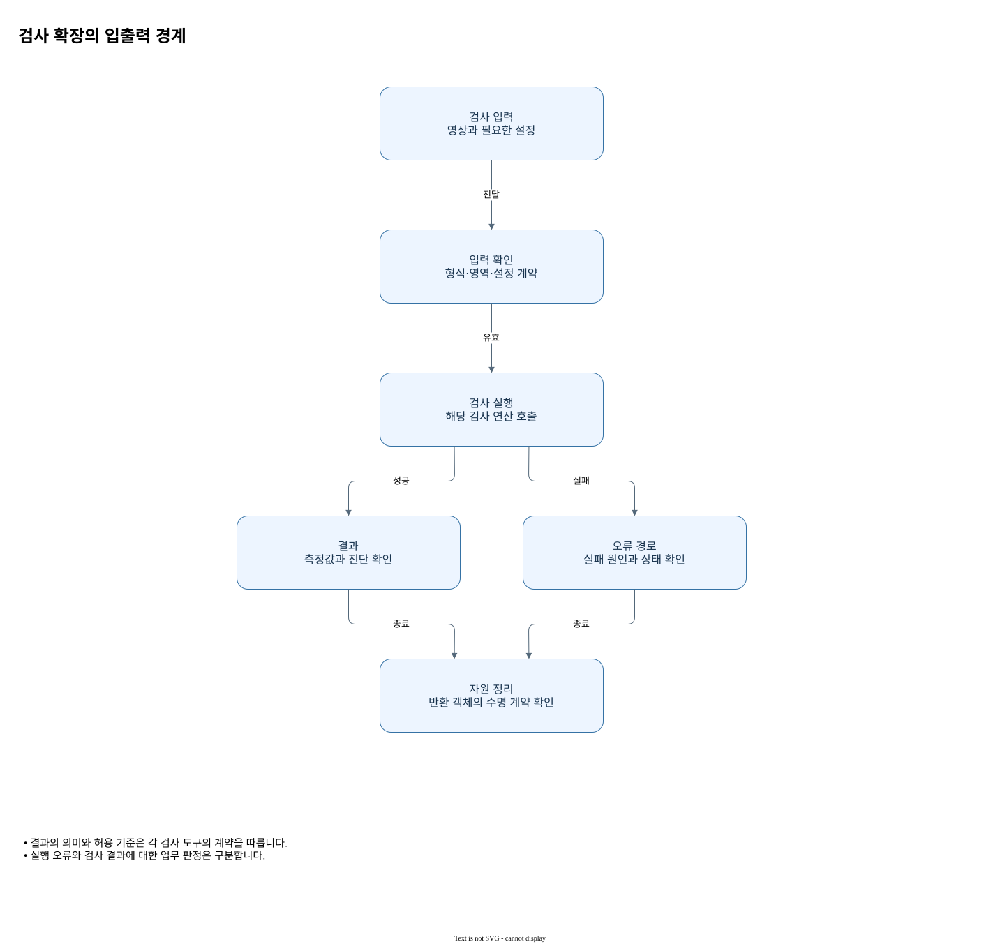

입력·출력 상세 계약
| 단계 | 입력과 옵션 | 출력과 수명 |
|---|---|---|
| 정렬 | 검사 영상과 기준 영상은 유한한 Gray8·Gray16·GrayF32; ROI는 기준 로컬 반열림 사각형. 검색 각도는 −π ≤ 최소 ≤ 최대 ≤ π 라디안, 양의 각도 간격; 양의 최소 배율 ≤ 최대 배율, 양의 배율 간격; 점수 0–1, 억제 거리 0 이상 픽셀, 최대 매치 수 양수. 가장 높은 매치 사용. | Found, Matched의 Position(검색 로컬), GlobalPosition, Angle, Scale, Score; ReferenceToInspection(전역 변환), ResidualRms(원시 밝기 RMS), ValidCount(픽셀). Aligned와 ValidMask는 각각 소유 영상. 결과도 해제. |
| 차분 | reference는 Gray8·Gray16·GrayF32이며 source는 같은 형식 또는 정렬된 GrayF64입니다. 크기·원점이 같아야 합니다. includeMask는 같은 크기·원점의 Gray8, 비제로 포함, null은 전체. 선택 픽셀이 하나 이상이어야 함. | SignedDifference, Score는 GrayF64, Mask는 Gray8. 모두 각각 해제. Gain과 Bias는 source 보정 계수, InspectedCount는 선택 픽셀 수, MeanScore와 MaxScore는 선택 픽셀 통계. |
| 후보 | mask는 Gray8, score는 동일 크기·원점의 GrayF64. 모든 전경 점수는 유한하고 0 이상이어야 하며 면적 필터로 제거될 전경도 검사함. | 행 우선 발견 순서의 Defects 배열은 복사 스냅샷. 각 Bounds·Centroid는 로컬, Area는 픽셀 수, Length·Width는 픽셀 셀 외곽 회전 사각형의 길이, Angle은 라디안. 결과 핸들은 해제. |
| 판정 | 후보와 DecisionSpec. 영역은 비어 있지 않은 로컬 사각형이며 영상 크기로 제한되지 않음. 상한은 등호 포함. | Passed; Reasons의 Count=1, TotalArea=2, SingleArea=4, Location=8; DefectCount, TotalArea, RejectionCount. Rejections는 인덱스와 SingleArea·Location 비트를 복사한 배열. 판정 결과는 해제. |

판독 기준
- 결과의 의미와 허용 기준은 각 검사 도구의 계약을 따릅니다.
- 실행 오류와 검사 결과에 대한 업무 판정은 구분합니다.
입력 영상 데이터의 픽셀 형식, 크기, 원점은 각 단계의 계산 가능 여부를 결정합니다. 정렬은 회색 입력과 기준의 학습 ROI를 받아 기준 격자에 맞춘 영상 데이터와 유효 마스크를 만듭니다. 차분은 같은 기하의 기준과 분석 영상 데이터 및 선택 마스크를 받으며, 분석 영상 데이터가 정렬 출력일 때 GrayF64를 사용할 수 있습니다. 마스크의 비제로 픽셀만 통계와 판정에 참여하므로 원점과 크기가 서로 맞는지 먼저 확인해야 합니다.
차분의 출력에는 부호 있는 잔차, 점수, 이진 마스크가 각각 있습니다. 표면 후보 추출은 Gray8 마스크와 같은 기하의 GrayF64 점수를 읽으며 전경 점수는 유한한 0 이상이어야 합니다. 판정 출력은 통과 여부와 사유 비트, 개수와 면적을 포함합니다. 이러한 영상 데이터 핸들과 후보 배열의 수명이 동일하다고 전제하지 말고 각각의 반환 계약을 살펴봅니다.
예를 들어 같은 5×5 크기라도 원점이 다른 두 ROI는 동일 기하로 취급되지 않습니다. 마스크 역시 해당 격자와 일치시켜야 합니다.
후보의 면적은 전경 픽셀을 센 값이고 점수는 차분의 허용치 대비 크기입니다. 같은 결함에 두 값이 함께 붙어 있어도 단위가 다르므로 면적 한도와 점수 해석을 분리합니다. 출력의 경계는 입력 뷰의 로컬 좌표이고 최종 허용 영역도 같은 좌표계로 정해야 합니다.
후보와 최종 판정의 경계
표면 후보 추출은 차분의 Gray8 전경 마스크와 같은 기하의 GrayF64 점수를 입력받습니다. 최소 면적과 연결 방식은 어떤 전경이 후보가 되는지 정하는 조건이고, DecisionSpec의 후보 수·면적·위치 한도는 그 후보들을 통과시킬지 정하는 별도 조건입니다.
예를 들어 후보 하나의 면적이 개별 한도 이내라도 최대 후보 수가 0이면 전체 판정에서 Count 사유가 설정될 수 있습니다. 전체 Reasons와 개별 Rejections는 서로 다른 수준이므로 둘을 함께 확인합니다. 앞 단계 정렬이 실패했다면 빈 후보를 만들어 통과시키지 않고 검사 불가로 분기합니다.